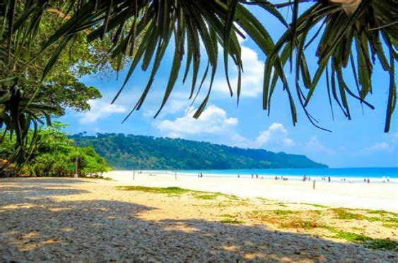
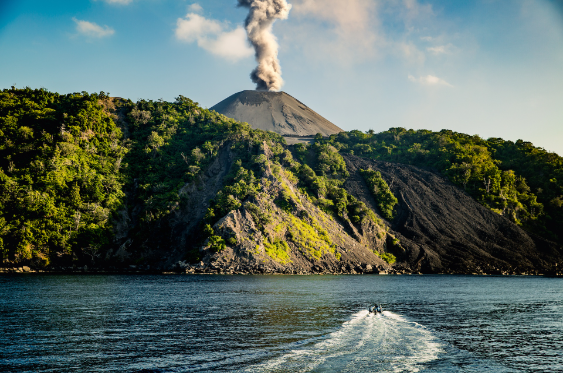
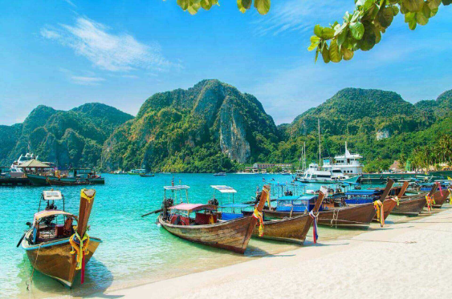

Radhanagar Beach

Radhanagar Beach is one of the most famous attractions in Havelock Island and the Andaman and Nicobar Islands itself. Commonly known as Beach No. 7, Radhanagar has been given the title of the best beach in Asia and the 7th best beach in the world by Time Magazine in 2004
months to vist :Andaman is typically during the dry season, which falls between November and April.Radhanagar Beach, located on Havelock Island in the Andaman and Nicobar Islands of India, stands as a pristine jewel of natural beauty. Renowned worldwide for its breathtaking scenery,
Radhanagar Beach captivates visitors with its soft, powdery white sands stretching along the coastline, gently kissed by the turquoise waters of the Andaman Sea. The beach offers a serene and tranquil atmosphere, ideal for relaxation and rejuvenation. Visitors can bask in the warm tropical sun, take leisurely strolls along the shore, or indulge in thrilling water sports such as snorkeling and scuba diving to explore the vibrant marine life
thriving in the coral reefs just offshore. With its stunning sunsets casting a golden glow over the horizon and the soothing sound of waves lapping against the shore, Radhanagar Beach provides an unforgettable experience of tropical paradise for all who visit.
Barren Island

Barren Island, located northeast of Port Blair, is home to the only active volcano in South Asia. Its volcanic activity, including eruptions in recent years, attracts interest from scientists and adventurers alike. While access to the island itself is restricted due to safety concerns, boat tours offer visitors the opportunity to witness the rugged beauty of the volcanic landscape from a safe distance. The surrounding waters teem with diverse marine life, making it a popular spot for diving enthusiasts.
months to visit: November to April.Barren Island, situated in the Andaman Sea northeast of Port Blair, stands as a testament to the raw power of nature with its status as South Asia's only active volcano. Despite its name, the island boasts a stark beauty, characterized by rugged terrain and steep slopes rising abruptly from the sea. While its volcanic activity limits vegetation, sparse grasses and shrubs dot its landscape, alongside nesting sites for various seabirds. Designated a restricted zone by the Indian government, access is tightly controlled due to safety concerns, although boat tours offer glimpses of its volcanic landscape from afar. Beyond its geological significance, Barren Island serves as a crucial site for scientific study, allowing researchers to monitor volcanic activity and gain insights into the dynamics of island formation and ecosystem resilience in extreme environments.
Havelock Island

Premium scuba diving and snorkeling are the highlights of the gorgeous Havelock Island, the most popular of the Andaman Islands. Glass-bottomed boats provide a similar up-close marine life experience. Jungle treks and camping are popular landlubbing activities, though the more delicately dispositioned can choose to retire to one of several luxury resorts. Refuel with fresh coconut milk and succulent, just-caught seafood, which dominates every meal.Best months to visit october to february.Havelock Island, nestled in the azure waters of the Andaman Sea, is renowned for its pristine beaches, vibrant coral reefs, and lush tropical forests. As the largest island in the Andaman archipelago, it offers visitors a tranquil escape into nature's embrace. Radhanagar Beach, with its powdery white sands and crystalline waters, consistently ranks among the world's best beaches, drawing sun-seekers and water sports enthusiasts alike. Snorkeling and diving adventures reveal a mesmerizing underwater world teeming with colorful marine life, including coral gardens and exotic fish species. Inland, verdant jungles beckon with hiking trails leading to secluded lagoons and breathtaking viewpoints. Havelock Island's laid-back atmosphere, coupled with its natural beauty, makes it a paradise for eco-tourism and sustainable travel, where visitors can unwind amidst the splendor of untouched nature.